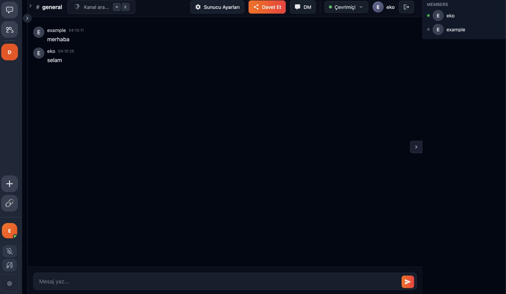

Featured work
Selected work — medical AI first, then applied ML and real-time backend systems.
AI-Based Multimodal Alzheimer's Diagnosis System
Graduation project, developed with the Godetya R&D team and in collaboration with neurology and nuclear medicine physicians. A deep learning pipeline for early Alzheimer's detection from multimodal brain imaging (PET + MRI), covering neuroimaging data curation, 3D preprocessing, and model training and validation. Awarded 1st place at Genç Beyinler Yeni Fikirler 2026 (TED University & Turkish Informatics Association). Development ongoing.
Product Analysis & Barcode Scanner
Self-trained model that analyses product ingredients, flags harmful content and explains why. Accepts input as manual text or via barcode / QR scan.
View on GitHub →Gatherly

Real-time communication platform built around a server and channel model: messaging with typing indicators, voice rooms and screen sharing, presence tracking, role and permission management. REST API documented with Swagger.
In development · private repoSpades Multiplayer Game
Four-player online Spades (Batak) over WebSockets: room management, bidding, trump and follow-suit enforcement, and a server-authoritative turn engine — clients send intents, the server owns the state.
Live demo ↗ · GitHub →Also built
Experience
R&D in medical AI, plus a backend and DevOps foundation.
Godetya Yapay Zeka ve Mühendislik
Oct 2025 — Present · AnkaraContributing to an R&D project on AI-assisted clinical decision support for neurodegenerative disease diagnosis: built an end-to-end PET–MR neuroimaging pipeline, trained and fine-tuned 3D deep learning models, and performed brain masking and normalisation. Completed the university-mandated internship within this project and continue as an ongoing contributor to the same research team.
Bisoft Bilgi Teknolojileri
Jul 2025 — Aug 2025 · AnkaraDeployed a PostgreSQL high-availability cluster on Kubernetes with ProxySQL-based routing and failover, achieving sub-30-second leader election. Built and containerised Java/Spring services with Docker, implemented structured JSON logging and zero-touch scaling, and supported deployment workflows using Git-based version control.
Skills
Tools and technologies I work with day to day.
Education & certifications
Let's talk
I'm open to Software / ML Engineer roles in Ankara and remote positions. The fastest way to reach me is email — I read everything.